Crédits photo
Les 209 photos de joueurs proviennent de Wikimedia Commons et sont réutilisées selon leur licence libre. Chaque image a été recadrée et détourée (fond retiré) ; les versions modifiées sont partagées sous la même licence que l'original. Les droits restent ceux de leurs auteurs, cités ci-dessous avec un lien vers la source et la licence.
Une photo ne correspond pas au bon joueur, ou tu es l'auteur d'une image et souhaites son retrait ? Écris à l'adresse indiquée dans les mentions légales.
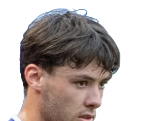
Aaron HickeyBrentfordPhoto : Bryan Berlin
CC BY-SA 4.0 · source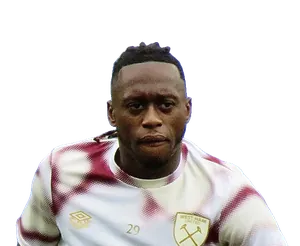
Aaron Wan-BissakaAston VillaPhoto : Egghead06
CC BY-SA 4.0 · source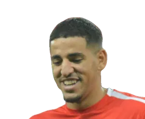
Abdel AbqarGetafePhoto : Nawfel Ajari
CC BY-SA 4.0 · source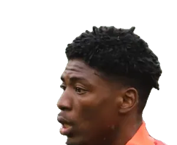
Abdoulaye N'DiayeParmePhoto : Paté kroute
CC0 · source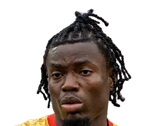
Abdul FatawuIpswichPhoto : Bryan Berlin
CC BY-SA 4.0 · source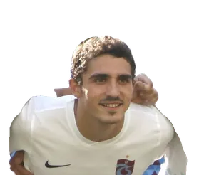
Abdülkadir ÖmürHull CityPhoto : senolsengul at Pixabay
CC0 · source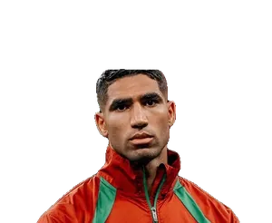
Achraf HakimiPSGPhoto : Laloumance
CC BY 4.0 · source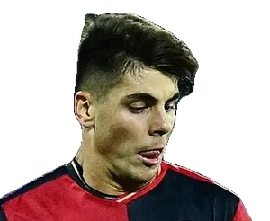
Adam ObertCagliariPhoto : Antonio Fraioli
CC BY-SA 4.0 · source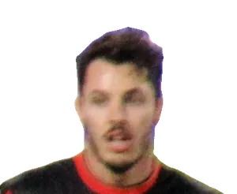
Adam SmithBournemouthPhoto : [https://www.flickr.com/photos/cfcunofficial/ @cfcunofficial (Chelsea…
CC BY-SA 2.0 · source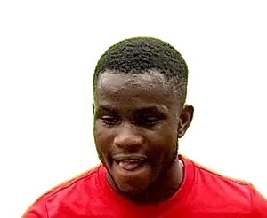
Ademola LookmanAtléticoPhoto : Willibald11
CC BY-SA 4.0 · source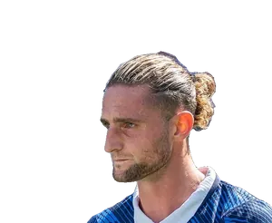
Adrien RabiotMilanPhoto : Bryan Berlin
CC BY-SA 4.0 · source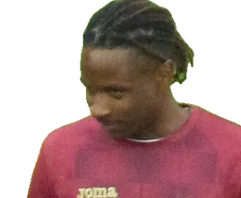
Adrien TamèzeTorinoPhoto : Supporterhéninois
CC0 · source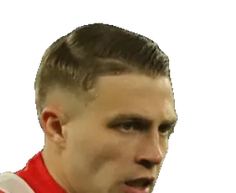
Adrien TruffertBournemouthPhoto : Paté kroute
CC0 · source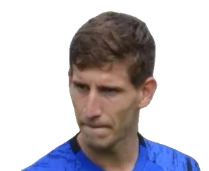
Aihen MuñozReal SociedadPhoto : Giovanni Batista Rodriguez from San Sebastian-Donostia, España
CC BY-SA 2.0 · source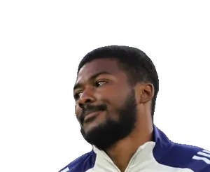
Ainsley Maitland-NilesEvertonPhoto : Paté kroute
CC0 · source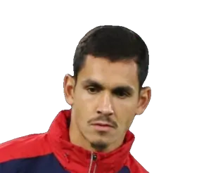
Aïssa MandiLevantePhoto : Paté kroute
CC0 · source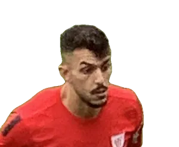
Aitor ParedesAthletic ClubPhoto : Montxohache
CC BY-SA 4.0 · source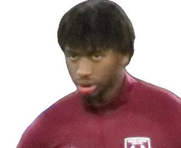
Aji AleseSunderlandPhoto : Egghead06
CC BY-SA 4.0 · source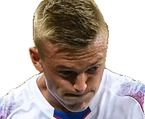
Albert GuðmundssonLazioPhoto : Светлана Бекетова
CC BY-SA 3.0 · source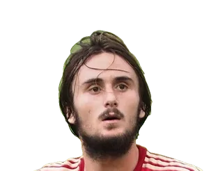
Aleix GarcíaLeverkusenPhoto : Tam Tam from Shizuoka, JAPAN
CC BY-SA 2.0 · source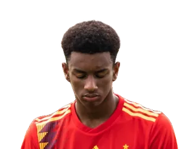
Alejandro BaldeBarcelonePhoto : Pedro Semitiel from Cehegín, España
CC BY 2.0 · source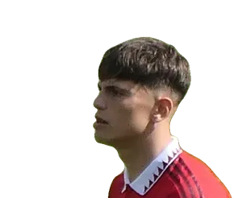
Alejandro GarnachoAston VillaPhoto : Ardfern
CC BY-SA 4.0 · source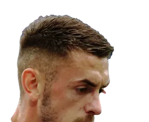
Aleksa TerzićFrosinonePhoto : Werner100359
CC BY-SA 4.0 · source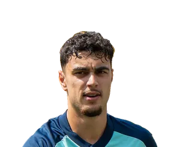
Aleksandar PavlovićBayernPhoto : Bryan Berlin
CC BY-SA 4.0 · source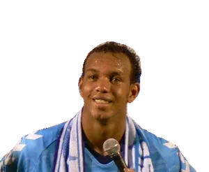
AlemãoRayo VallecanoPhoto : Ryosuke Yagi
CC BY 2.0 · source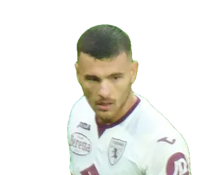
Alessandro BuongiornoNaplesPhoto : Supporterhéninois
CC0 · source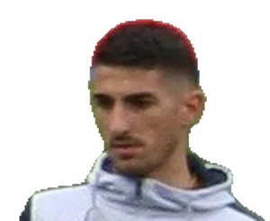
Alessandro DeiolaCagliariPhoto : Domenico Cucinella (Doc Cox at Italian Wikipedia)
CC BY-SA 3.0 · source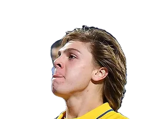
Alessio ZerbinFrosinonePhoto : Antonio Fraioli
CC BY-SA 4.0 · source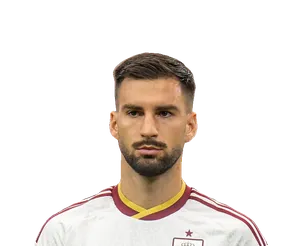
Álex BaenaAtléticoPhoto : Bryan Berlin
CC BY-SA 4.0 · source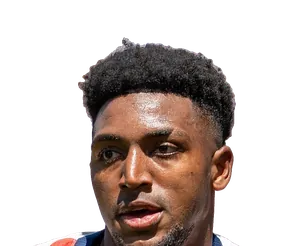
Alex FreemanVillarrealPhoto : Bryan Berlin
CC BY-SA 4.0 · source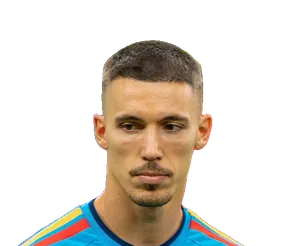
Álex GrimaldoAtléticoPhoto : Bryan Berlin
CC BY-SA 4.0 · source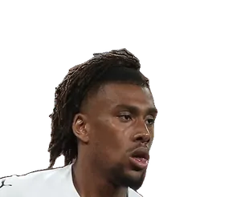
Alex IwobiFulhamPhoto : Антон Зайцев
CC BY-SA 3.0 · source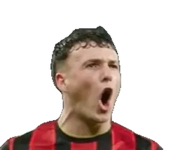
Álex JiménezFiorentinaPhoto : AFC Bournemouth
CC BY 3.0 · source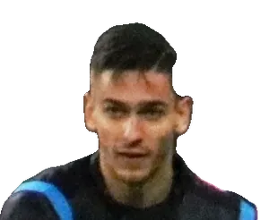
Alex MeretNaplesPhoto : Werner100359
CC BY-SA 4.0 · source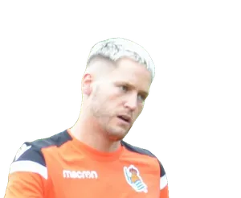
Álex RemiroReal SociedadPhoto : Giovanni Batista Rodriguez from San Sebastian-Donostia, España
CC BY-SA 2.0 · source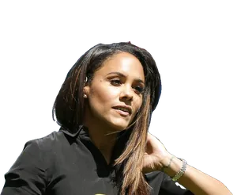
Alex ScottBournemouthPhoto : James Boyes from UK
CC BY 2.0 · source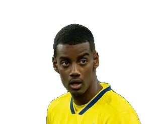
Alexander IsakLiverpoolPhoto : Rolandhino1
CC BY-SA 4.0 · source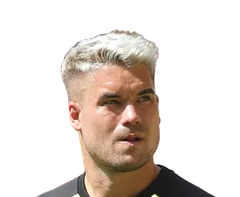
Alexander MeyerDortmundPhoto : Sandro Halank, Wikimedia Commons
CC BY-SA 4.0 · source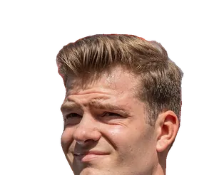
Alexander SørlothAtléticoPhoto : Bryan Berlin
CC BY-SA 4.0 · source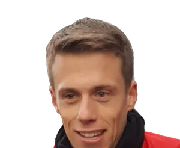
Alexander SchwolowMayencePhoto : James Steakley
CC BY-SA 4.0 · source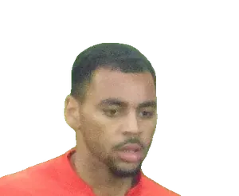
Alexis Claude-MauriceAugsbourgPhoto : Supporterhéninois
CC0 · source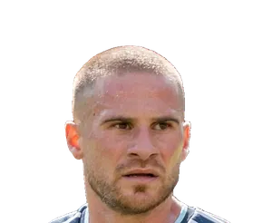
Alexis Mac AllisterLiverpoolPhoto : Bryan Berlin
CC BY-SA 4.0 · source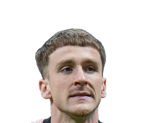
Alexis SaelemaekersMilanPhoto : Bryan Berlin
CC BY-SA 4.0 · source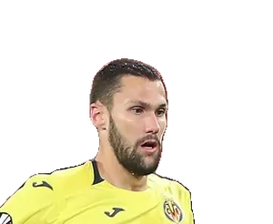
Alfonso PedrazaLazioPhoto : Антон Зайцев
CC BY-SA 3.0 · source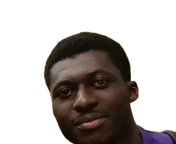
Alfred DuncanVenisePhoto : Pitroipa10
CC0 · source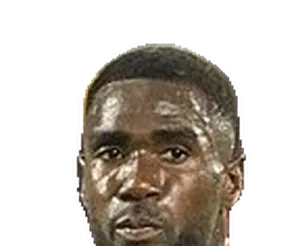
Alieu FaderaCagliariPhoto : feguifoot
CC0 · source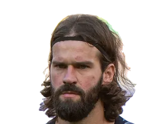
Alisson BeckerLiverpoolPhoto : Bryan Berlin
CC BY-SA 4.0 · source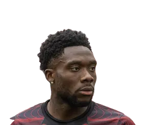
Alphonso DaviesBayernPhoto : Bryan Berlin
CC BY-SA 4.0 · source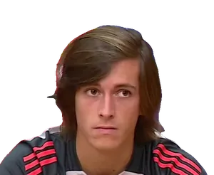
Álvaro CarrerasReal MadridPhoto : Sport Lisboa e Benfica
CC BY 3.0 · source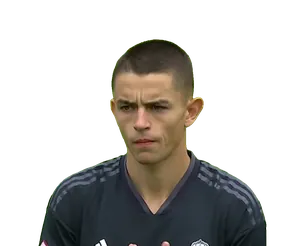
Álvaro FidalgoBetisPhoto : Real Madrid C.F
CC BY 3.0 · source- Álvaro OdriozolaReal SociedadPhoto : Estevoaei
CC BY-SA 4.0 · source - Amad DialloMan UnitedPhoto : Bryan Berlin
CC BY-SA 4.0 · source - Amadou OnanaAston VillaPhoto : Bryan Berlin
CC BY-SA 4.0 · source - Amar DedićNewcastlePhoto : Werner100359
CC BY-SA 4.0 · source - Anan KhalailiCrystal PalacePhoto : Sidney.Cortez
CC BY-SA 4.0 · source - Ander BarrenetxeaReal SociedadPhoto : Giovanni Batista Rodriguez from San Sebastian-Donostia, España
CC BY-SA 2.0 · source - Ander GuevaraAlavésPhoto : Giovanni Batista Rodriguez from San Sebastian-Donostia, España
CC BY-SA 2.0 · source - Andrea AdoranteVenisePhoto : DavidNeres07
CC0 · source - Andreas ChristensenBarcelonePhoto : Антон Зайцев
CC BY-SA 3.0 · source - Andrey SantosMan UnitedPhoto : Paté kroute
CC0 · source - Andriy LuninReal MadridPhoto : Fotografías Archimadrid.es
CC BY 2.0 · source - Andy DioufInterPhoto : Paté kroute
CC0 · source - Andy RobertsonTottenhamPhoto : Bryan Berlin
CC BY-SA 4.0 · source - Ange-Yoan BonnyInterPhoto : Bryan Berlin
CC BY-SA 4.0 · source - AngeliñoLa CorognePhoto : Steffen Prößdorf
CC BY-SA 4.0 · source - Angelo StillerStuttgartPhoto : Jeollo von VfB-exklusiv.de
CC BY-SA 4.0 · source - Anthony ElangaNewcastlePhoto : Amanda Aikioniemi
Public domain · source - Anthony GordonBarcelonePhoto : YantsImages
CC BY-SA 4.0 · source - Antoine SemenyoMan CityPhoto : Bryan Berlin
CC BY-SA 4.0 · source - Antonín KinskýTottenhamPhoto : Рыбакова Елена
CC BY-SA 3.0 · source - Antonio NusaLeipzigPhoto : Bryan Berlin
CC BY-SA 4.0 · source - Antonio RüdigerReal MadridPhoto : Bryan Berlin
CC BY-SA 4.0 · source - AntonyBetisPhoto : Marcelo Figueras
Public domain · source - Ao TanakaLeedsPhoto : 内閣官房内閣広報室
CC BY 4.0 · source - Archie GrayTottenhamPhoto : Jim Easton
CC0 · source - Arda GülerReal MadridPhoto : LawEnthusiast
CC BY-SA 4.0 · source - Arnaud KalimuendoNottingham ForestPhoto : Paté kroute
CC0 · source - Arsen ZakharyanReal SociedadPhoto : ФК "Динамо" Москва
CC BY-SA 3.0 · source - Artem DovbykBolognePhoto : СТАНИСЛАВ ВЕДМИДЬ
CC BY-SA 3.0 · source - Asier VillalibreRacing SantanderPhoto : Werner100359
CC BY-SA 3.0 · source - Assane DiaoCômePhoto : Bryan Berlin
CC BY-SA 4.0 · source - Aurélien TchouaméniReal MadridPhoto : Bryan Berlin
CC BY-SA 4.0 · source - Axel DisasiCrystal PalacePhoto : Ksiamon
CC BY-SA 4.0 · source - Aymeric LaporteAthletic ClubPhoto : Bryan Berlin
CC BY-SA 4.0 · source - Ayoze PérezVillarrealPhoto : David J Nelson Sports Photography
CC0 · source - Azor MatusiwaIpswichPhoto : Supporterhéninois
CC0 · source - Bafodé DiakitéBournemouthPhoto : Paté kroute
CC0 · source - BahAugsbourgPhoto : Sport Lisboa e Benfica
CC BY 3.0 · source - Bartol FranjićVenisePhoto : PIXSELL
CC BY 3.0 · source - BeitiaReal SociedadPhoto : Giovanni Batista Rodriguez from San Sebastian-Donostia, España
CC BY-SA 2.0 · source - Ben ChilwellCrystal PalacePhoto : Дмитрий Пукалик
CC BY-SA 3.0 · source - Ben DaviesTottenhamPhoto : Steindy (d) 16:11, 10 November 2016 (UTC)
CC BY-SA 3.0 · source - Ben DoakBournemouthPhoto : Bryan Berlin
CC BY-SA 4.0 · source - Beñat PradosAthletic ClubPhoto : Montxohache
CC BY-SA 4.0 · source - Beñat TurrientesReal SociedadPhoto : Estevoaei
CC BY-SA 4.0 · source - Benedict HollerbachMayencePhoto : Winfrey
CC BY-SA 4.0 · source - Benjamin CremaschiParmePhoto : Bryan Berlin
CC BY-SA 4.0 · source - Benjamin LecomteFulhamPhoto : Paté kroute
CC0 · source - Benjamin PavardInterPhoto : Кирилл Венедиктов
CC BY-SA 3.0 · source - Benoît BadiashileNaplesPhoto : The White House
Public domain · source - Bernardo SilvaReal MadridPhoto : Bryan Berlin
CC BY-SA 4.0 · source - Bernd LenoFulhamPhoto : Granada
CC BY-SA 4.0 · source - BetoFiorentinaPhoto : Вячеслав Евдокимов
CC BY-SA 3.0 · source - Boris RadunovićCagliariPhoto : Granada
CC BY-SA 4.0 · source - BoselliGetafePhoto : Cazadoroculto
Public domain · source - Boubacar KamaraAston VillaPhoto : Supporterhéninois
CC0 · source - Bradley BarcolaLiverpoolPhoto : Bryan Berlin
CC BY-SA 4.0 · source - Brahim DíazReal MadridPhoto : Bryan Berlin
CC BY-SA 4.0 · source - Brandon Thomas-AsanteCoventryPhoto : Bryan Berlin
CC BY-SA 4.0 · source - Brian BrobbeySunderlandPhoto : Carlo Bruil Fotografie
CC BY 2.0 · source - Bruno FernandesMan UnitedPhoto : Bryan Berlin
CC BY-SA 4.0 · source - Bruno GuimarãesArsenalPhoto : Bryan Berlin
CC BY-SA 4.0 · source - Bryan CristanteRomaPhoto : Антон Зайцев
CC BY-SA 3.0 · source - Bryan MbeumoMan UnitedPhoto : ESTAC Troyes
CC BY 3.0 · source - Bukayo SakaArsenalPhoto : Bryan Berlin
CC BY-SA 4.0 · source - Callum Hudson-OdoiNottingham ForestPhoto : Vyacheslav Evdokimov
CC BY-SA 3.0 · source - Calvin BasseyFulhamPhoto : Carlo Bruil Fotografie
CC BY 2.0 · source - CampbellElversbergPhoto : TankedBevo of ShaggyBevo.com
CC BY 2.5 · source - Carlo PinsoglioJuventusPhoto : Matteo Brama
CC BY-SA 4.0 · source - Carlos BalebaMan UnitedPhoto : Timmy96
CC0 · source - CarreraReal SociedadPhoto : Кирилл Венедиктов
CC BY-SA 3.0 · source - Cédric KipréIpswichPhoto : Paté kroute
CC0 · source - Charalampos KostoulasBrightonPhoto : Timmy96
CC0 · source - Charles De KetelaereAtalantaPhoto : Bryan Berlin
CC BY-SA 4.0 · source - ChavarríaChelseaPhoto : Supporterhéninois
CC0 · source - Ché AdamsTorinoPhoto : Birmingham City F.C.
CC0 · source - Cheick DoucouréCrystal PalacePhoto : Supporterhéninois
CC0 · source - Chemsdine TalbiSunderlandPhoto : Abdelali Bentarki
CC BY 4.0 · source - Chidera EjukeSévillePhoto : Антон Зайцев
CC BY-SA 3.0 · source - Chris FührichStuttgartPhoto : Jeollo von VfB-exklusiv.de
CC BY 3.0 · source - Chris WoodNottingham ForestPhoto : Кирилл Венедиктов
CC BY-SA 3.0 · source - Christian GünterFribourgPhoto : James Steakley
CC BY 4.0 · source - Christian NørgaardEvertonPhoto : Britta Zimmermann
CC BY-SA 3.0 · source - Christopher NkunkuLeipzigPhoto : Steffen Prößdorf
CC BY-SA 4.0 · source - Christos MandasLazioPhoto : Timmy96
CC0 · source - CiervoCagliariPhoto : Antonio Fraioli
CC BY-SA 4.0 · source - Cody GakpoLiverpoolPhoto : User:Zafer
CC BY-SA 4.0 · source - Cole PalmerChelseaPhoto : The White House
Public domain · source - CondeBetisPhoto : El Gráfico
Public domain · source - Conor BradleyLiverpoolPhoto : Biser Todorov
CC BY 4.0 · source - Couhaib DriouechCeltaPhoto : Hans Reefman
CC BY-SA 4.0 · source - Cristhian MosqueraArsenalPhoto : Chensiyuan
CC BY-SA 4.0 · source - Cristian RomeroAtléticoPhoto : Bryan Berlin
CC BY-SA 4.0 · source - Cristian VolpatoSassuoloPhoto : Bryan Berlin
CC BY-SA 4.0 · source - Cucho HernándezBetisPhoto : Fotografía oficial de la Presidencia de Colombia
Public domain · source - Curtis JonesInterPhoto : User:Stepro
CC BY-SA 4.0 · source - Daichi KamadaCrystal PalacePhoto : Sven Mandel
CC BY-SA 4.0 · source - Dan-Axel ZagadouStuttgartPhoto : Jeollo von VfB-exklusiv.de
CC BY 4.0 · source - Dan BurnNewcastlePhoto : Bryan Berlin
CC BY-SA 4.0 · source - Dan NdoyeNottingham ForestPhoto : Supporterhéninois
CC0 · source - Dango OuattaraBrentfordPhoto : AFC Bournemouth
CC BY 3.0 · source - Dani BarciaLa CorognePhoto : Estevoaei
CC BY-SA 4.0 · source - Dani CarvajalGetafePhoto : Rolandhino1
CC BY-SA 4.0 · source - Dani CeballosBetisPhoto : Fotografías Archimadrid.es
CC BY 2.0 · source - Dani OlmoBarcelonePhoto : Bryan Berlin
CC BY-SA 4.0 · source - Daniel BolocaSassuoloPhoto : Antonio Fraioli
CC BY-SA 4.0 · source - Daniel BragançaTorinoPhoto : Sporting Clube de Portugal
CC BY 3.0 · source - Daniel SvenssonDortmundPhoto : Mikael Hervestad
CC BY-SA 4.0 · source - Daniele GhilardiRomaPhoto : LittleWhites
CC BY-SA 4.0 · source - Daniele RuganiJuventusPhoto : MichaelEmilio
CC BY 4.0 · source - Danilo D'AmbrosioMonzaPhoto : Илья Хохлов
CC BY-SA 3.0 · source - Danny da CostaMayencePhoto : Silesia711
CC BY-SA 4.0 · source - Danny WelbeckChelseaPhoto : jamesboyes
CC BY 2.0 · source - Dany MotaMonzaPhoto : Nehme1499
CC BY-SA 4.0 · source - Darío OsorioCrystal PalacePhoto : Carlos yo
CC BY-SA 4.0 · source - Darnell FurlongIpswichPhoto : Jrppezza
CC BY-SA 4.0 · source - David AffengruberFulhamPhoto : Werner100359
CC BY-SA 4.0 · source - David AlabaUdinesePhoto : Rufus46
CC BY-SA 3.0 · source - David BrooksBournemouthPhoto : AFC Bournemouth
CC BY 3.0 · source - David MellaLa CorognePhoto : Estevoaei
CC BY-SA 4.0 · source - David NeresNaplesPhoto : Sport Lisboa e Benfica
CC BY 3.0 · source - David RaumLeipzigPhoto : Bryan Berlin
CC BY-SA 4.0 · source - David RayaArsenalPhoto : Bryan Berlin
CC BY-SA 4.0 · source - Davide FrattesiLazioPhoto : Werner100359
CC BY-SA 4.0 · source - Dayot UpamecanoBayernPhoto : Bryan Berlin
CC BY-SA 4.0 · source - Dean HendersonCrystal PalacePhoto : Bryan Berlin
CC BY-SA 4.0 · source - Declan RiceArsenalPhoto : Bryan Berlin
CC BY-SA 4.0 · source - Dejan KulusevskiTottenhamPhoto : Original : Rolandhino1 / Travail dérivé : Danyele
CC BY-SA 4.0 · source - Demba ThiamMonzaPhoto : Supporterhéninois
CC0 · source - Denis SuárezAlavésPhoto : Giovanni Batista Rodriguez from San Sebastian-Donostia, España
CC BY-SA 2.0 · source - Deniz UndavStuttgartPhoto : Jeollo von VfB-exklusiv.de
CC BY-SA 4.0 · source - Dennis SeimenStuttgartPhoto : FriederRöcklerII
CC0 · source - Désiré DouéPSGPhoto : Bryan Berlin
CC BY-SA 4.0 · source - Destiny UdogieTottenhamPhoto : MichaelEmilio
CC BY 4.0 · source - Devyne RenschRomaPhoto : Voice of America (Aziz Karimov)
Public domain · source - Diego CarlosParmePhoto : Дмитрий Пукалик
CC BY-SA 3.0 · source - Diego GómezBrightonPhoto : Alex-ch49
CC BY-SA 3.0 · source - Diego LlorenteBetisPhoto : Giovanni Batista Rodriguez from San Sebastian-Donostia, España
CC BY-SA 2.0 · source - Diego MoreiraMilanPhoto : Paté kroute
CC0 · source - Diego RicoOsasunaPhoto : AFC Bournemouth
CC BY 3.0 · source - Diego VillaresLa CorognePhoto : Estevoaei
CC BY-SA 4.0 · source - DiengValencePhoto : Bryan Berlin
CC BY-SA 4.0 · source - Diogo DalotMan UnitedPhoto : Bryan Berlin
CC BY-SA 4.0 · source - Djed SpenceInterPhoto : Bryan Berlin
CC BY-SA 4.0 · source - Djibril SowGenoaPhoto : Silesia711
CC BY-SA 4.0 · source - Domenico BerardiSassuoloPhoto : Palazzo Chigi
CC BY 3.0 · source - Dominic Calvert-LewinLeedsPhoto : @cfcunofficial (Chelsea Debs) London
CC BY-SA 2.0 · source - Dominic SolankeTottenhamPhoto : AFC Bournemouth
CC BY 3.0 · source - Dominik SzoboszlaiLiverpoolPhoto : Timmy96
CC0 · source - Douglas LuizJuventusPhoto : MintyGel
CC0 · source - Duje Ćaleta-CarSassuoloPhoto : Paté kroute
CC0 · source - Dwight McNeilCrystal PalacePhoto : Kelvin Stuttard
CC BY-SA 4.0 · source - Eberechi EzeArsenalPhoto : Bryan Berlin
CC BY-SA 4.0 · source - EchegoyenOsasunaPhoto : Daeri
CC0 · source - Eddie NketiahCrystal PalacePhoto : Chensiyuan
CC BY-SA 4.0 · source - Éder MilitãoReal MadridPhoto : Real Madrid
CC BY 3.0 · source - ÉdersonAtalantaPhoto : YantsImages
CC BY-SA 4.0 · source - Edon ZhegrovaJuventusPhoto : Paté kroute
CC0 · source - Đorđe PetrovićBournemouthPhoto : Paté kroute
CC0 · source
.jpg){kind=link}


.jpg){kind=link}

.jpg){kind=link}
.jpg){kind=link}
_-_%D0%BA%D0%BE%D0%BF%D0%B8%D1%8F.jpg){kind=link}
_(cropped).jpg){kind=link}
.jpg){kind=link}
_22.jpg){kind=link}


.jpg){kind=link}
.jpg){kind=link}
.jpg){kind=link}
.jpg){kind=link}
_19.jpg){kind=link}

_2006.jpg){kind=link}
_47.jpg){kind=link}


.jpg){kind=link}


_(Alex_Remiro).jpg){kind=link}
.jpg){kind=link}

_by_Sandro_Halank%E2%80%93018.jpg){kind=link}
.jpg){kind=link}

_36.jpg){kind=link}
.jpg){kind=link}
.jpg){kind=link}


.jpg){kind=link}
.jpg){kind=link}


.jpg){kind=link}
.jpg){kind=link}
.jpg){kind=link}


.jpg){kind=link}


.jpg){kind=link}
.jpg){kind=link}
.jpg){kind=link}

.jpg){kind=link}
.jpg){kind=link}

_(cropped).jpg){kind=link}
.jpg){kind=link}
.jpg){kind=link}


.JPG){kind=link}

.jpg){kind=link}


_10.jpg){kind=link}


_beitia_(cropped).jpg){kind=link}

_02.jpg){kind=link}
.jpg){kind=link}

.jpg){kind=link}

.jpg){kind=link}


.jpg){kind=link}


_17.jpg){kind=link}
.jpg){kind=link}


.jpg){kind=link}
.jpg){kind=link}
.jpg){kind=link}
.jpg){kind=link}

.jpg){kind=link}

.jpg){kind=link}


.jpg){kind=link}

.jpg){kind=link}


_73.jpg){kind=link}
.jpg){kind=link}


.jpg){kind=link}
.jpg){kind=link}

.jpg){kind=link}
.jpg){kind=link}

.JPG){kind=link}

_-_El_Gr%C3%A1fico_1870.jpg){kind=link}

.JPG){kind=link}
.jpg){kind=link}


.jpg){kind=link}
.jpg){kind=link}


_52.jpg){kind=link}

.jpg){kind=link}
.jpg){kind=link}


.jpg){kind=link}
.jpeg){kind=link}
.jpg){kind=link}
.jpg){kind=link}

.jpg){kind=link}


_56.jpg){kind=link}
.jpg){kind=link}


_14_(cropped).jpg){kind=link}
.jpg){kind=link}


.jpg){kind=link}
_35.jpg){kind=link}
_(cropped).jpg){kind=link}

.jpg){kind=link}
.jpg){kind=link}
.jpg){kind=link}
_(4)_(Devyne_Rensch).jpg){kind=link}
.jpg){kind=link}
.jpg){kind=link}
_(cropped).jpg){kind=link}


.jpg){kind=link}
.jpg){kind=link}


.jpg){kind=link}
.jpg){kind=link}


.jpg){kind=link}


_(cropped).jpg){kind=link}